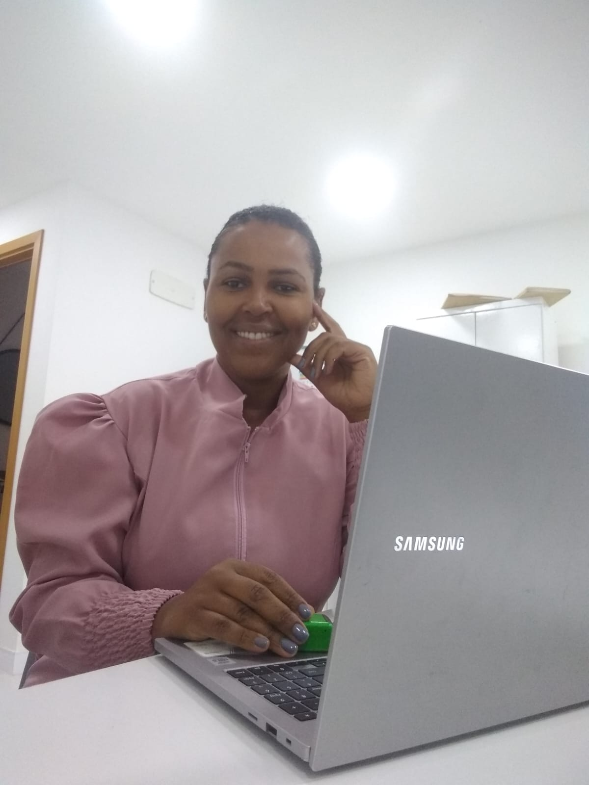

Enxergar além da recusa.
Entender que a criança não comer determinado alimento é apenas a parte visível do caso.

Workshop de Seletividade Alimentar | Priscila Leite
Para nutricionistas que atendem ou desejam atender crianças com seletividade alimentar e ainda sentem insegurança para saber o que fazer na prática. Entenda o que avaliar, como organizar seu raciocínio e por onde começar — sem depender de atividades prontas ou tentativa e erro.
A recusa é a parte visível. A segurança começa quando você aprende a enxergar o caso inteiro e transforma informações em direção clínica.
Entender que a criança não comer determinado alimento é apenas a parte visível do caso.
Saber quais informações merecem atenção antes de decidir sua conduta.
Parar de escolher atividades aleatoriamente e entender por que determinada estratégia faz sentido.
Você já estudou
“E agora?”
A atividade é uma ferramenta. Não é o tratamento. Essa é uma das principais ideias que quero te mostrar neste workshop.
Por trás daquela recusa podem existir fatores sensoriais, comportamentais, emocionais, clínicos, ambientais e familiares. Por isso, copiar a atividade que funcionou com outra criança não significa que ela fará sentido para o seu paciente.
Antes de decidir o que fazer, você precisa entender o que está acontecendo.
Quando você depende de atividades prontas
Quando desenvolve raciocínio clínico
O que você vai encontrar
Existe uma diferença entre conhecer seletividade e saber conduzir um caso. É essa segunda forma de pensar que eu quero te apresentar.
O workshop é para você que
Casos reais de quem encontrou estrutura para transformar conhecimento em condução.
Era formada havia dois anos, mas ainda não atuava. Tinha medo de atender crianças, não sabia dar continuidade depois da anamnese, estruturar a sessão ou conduzir devolutivas. Depois do acompanhamento com a Priscila, passou a atender com mais estrutura e já possui paciente com intenção de alta.
Tinha dificuldade para planejar terapia alimentar, medo de o paciente não evoluir e insegurança pela falta de conhecimento aplicado. Depois do acompanhamento, passou a planejar e conduzir sessões com mais tranquilidade, recebendo indicações e feedbacks positivos.
Workshop de Seletividade Alimentar
 14 anos de Nutrição
14 anos de NutriçãoSobre a Priscila Leite
Priscila Leite é nutricionista infantil, educadora e mentora de nutricionistas. Sua atuação com terapia alimentar começou quando percebeu, na prática, que orientação nutricional e dieta nem sempre eram suficientes para fazer algumas crianças evoluírem.
A partir disso, aprofundou seus estudos em seletividade alimentar, comportamento alimentar e áreas complementares como fonoaudiologia, terapia ocupacional e psicologia.
Hoje atua na formação de nutricionistas e desenvolveu seu próprio método, unindo ciência, experiência clínica, raciocínio aplicado e orientação familiar.
Você ainda pode estar pensando
Toque para abrir. A luz acompanha sua leitura até a última resposta.
Sim. O workshop também foi pensado para nutricionistas que querem começar e precisam entender a lógica da condução antes de receber os primeiros casos.
Sim, principalmente se você ainda sente que algumas sessões acontecem por tentativa e erro ou se depende muito de atividades prontas.
As estratégias podem aparecer dentro dos casos, mas o foco não é ensinar uma lista de atividades. O foco é mostrar o que precisa ser pensado antes de escolhê-las.
Sim. A gravação será disponibilizada para as alunas do curso de seletividade alimentar.
Você não precisa de mais uma pasta cheia de atividades.
Você precisa entender o que está vendo no paciente para saber por que, quando e qual estratégia utilizar. Se hoje um caso de seletividade ainda faz você pensar “E agora?”, eu quero te encontrar no workshop.
26 de setembro de 2026 • R$ 47